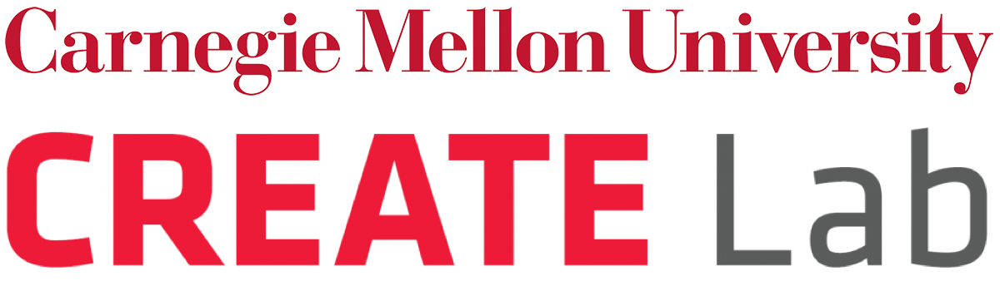
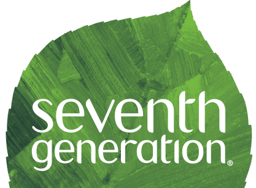
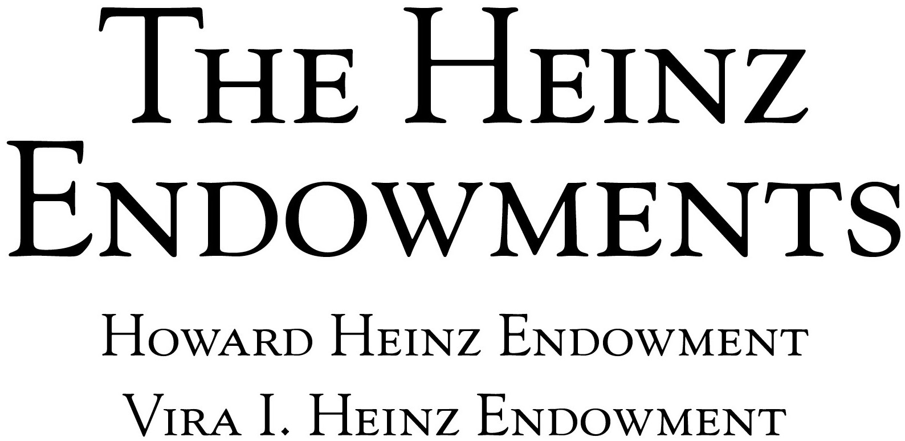

About Us
 The CREATE Lab (Community Robotics, Education and Technology Empowerment Lab) at Carnegie Mellon University, explores socially meaningful innovation and deployment of robotic technologies. CREATE is both a technology innovator and a community partner; this unique combination enables the creation of community-based technologies that help empower citizens to realize their vision for a better quality of life. For more information visit: cmucreatelab.org
 Seventh Generation is a sustainable home cleaning product company, based in Burlington, Vermont. For the past 30 years, Seventh Generation has been committed to using business as a force for good. The company partners with like-minded organizations, like CREATE Lab, to advocate for the rights of people and the planet because they believe that a company's values are as important as the products it makes. Seventh Generation knows that plant-based products can provide the efficacy you are looking for, and that products designed from renewable plant-based ingredients are a more sustainable option than ingredients made from petroleum. Above all, they believe that we have a responsibility to this generation and the next seven, and invite us all on their journey to nurture the health of the next seven generations. For more information visit: seventhgeneration.com
In 2018, Seventh Generation partnered with the Sierra Club's Ready for 100 campaign asking cities across the country to commit to 100% renewable energy. This effort is in service of a healthier future for all -- a move to 100% renewable energy will help reduce negative health effects (like asthma) caused by burning fossil fuels. Join the movement for 100% clean energy. Over 100 cities have committed to running on clean energy by 2035 -- is your city #Readyfor100? Ask your city to commit today!
 The Heinz Endowments seeks to help our region thrive as a whole and just community, and through that work to model solutions to major national and global challenges. We are based in Pittsburgh, Pennsylvania, where we concentrate on advancing a sustainable future for our community and planet, successful learning outcomes for young people and their families, and a culture of engaged creativity for all our citizens. For more information visit: For more information visit: www.heinz.org
Local Partners in Pittsburgh, PA
The Smell MyCity app is an extension of the Smell Pittsburgh app, which launched in 2016. This work was made possible with support from The Heinz Endowments and contributions from our founding Pittsburgh partners, who are described below.
Allegheny County Clean Air Now
Allegheny County Clean Air Now (ACCAN) was founded in June, 2014 to give a voice to the residents living downwind from the DTE Energy's Shenango Coke Plant on Neville Island.
Breathe Project
Breathe Project is a clearinghouse for information on air quality in Pittsburgh, southwestern Pennsylvania and beyond. We use the best available science and technology to better understand the quality of the air we breathe and provide opportunities for citizens to engage and take action.
PennEnvironment Research & Policy Center
PennEnvironment Research & Policy Center is dedicated to protecting our air, water and open spaces. We investigate problems, craft solutions, educate the public and decision-makers, and help the public make their voices heard in local, state and national debates over the quality of our environment and our lives.
Group Against Smog and Pollution
For fifty years the Group Against Smog and Pollution (GASP) has worked to improve air quality in southwestern Pennsylvania in order to safeguard human, environmental and economic health in the region. Our work to improve air quality involves education, advocacy, legal, and policy work.
Blue Lens, LLC
Blue Lens, LLC embodies the work of Mark Dixon, an award-winning filmmaker, photographer, media consultant, activist, and public speaker exploring the frontiers of social change on a finite planet. After graduating from Stanford University with a degree in industrial engineering, he worked for start-up companies in Silicon Valley before turning to documentary filmmaking. His productions include "YERT-Your Environmental Road Trip" (a year-long "eco-expedition" through all 50 United States exploring environmental sustainability) and, "The Power of One Voice: A 50-Year Perspective on the Life of Rachel Carson." He is currently working on a new documentary entitled "Inversion: The Unfinished Business of Pittsburgh's Air." Mark has given presentations on environmental topics to diverse audiences including Carnegie Mellon University, Yale University, Stanford University, Sony Pictures, TEDx Pittsburgh, and the U.S.
Clean Water Action
Since its founding during the campaign to pass the landmark Clean Water Act in 1972, Clean Water Action has worked to win strong health and environmental protections by bringing issue expertise, solution-oriented thinking and people power to the table.
Sierra Club
The Sierra Club is the most enduring and influential grassroots environmental organization in the United States. We amplify the power of our 3.5+ million members and supporters to defend everyone's right to a healthy world.
PennFuture
PennFuture is leading the transition to a clean energy economy in Pennsylvania and beyond. We are protecting our air, water and land, and empowering citizens to build sustainable communities for future generations.
Clean Air Council
Clean Air Council is a member-supported environmental organization serving the Mid-Atlantic Region and has been fighting for everyone's right to breathe clean air since 1967. The Council uses public education, community action, government oversight and enforcement of environmental laws to advocate for healthy air.
ROCIS
The mission of ROCIS (Reducing Outdoor Contaminants in Indoor Spaces) is to reduce the impact of exterior environmental pollution in southwestern Pennsylvania to improve healthy and energy efficient indoor environments where we live, work, and learn.
Local Partners in Louisville, KY
Our Louisville pilot is made possible with support from The Envirome Institute at the University of Louisville, and in partnership with REACT (Rubbertown Emergency ACTion) and The West Jefferson County Community Task Force.
The Envirome Institute at the University of Louisville School of Medicine
The Envirome Institute is partnering with the CREATE Lab to offer public health scientific analysis and review of the smell reports in Louisville. This work will be carried out through its Superfund Research Program and Center for Healthy Air, Water and Soil, and findings will be shared with public and local government agencies.
The Envirome Institute's research brings together a multidisciplinary group of physicians, scientists, chemists, engineers, epidemiologists, economists, psychologists, statisticians, sociologists, and community workers in order to turn scientific discovery into actionable knowledge that can help us to build healthier cities by:
- Learning the effects of our environments on health
- Increasing understanding of environmental health issues locally and globally
- Studying how differences in urban environments give rise to health disparities
- Investigating how changes in environments affect health outcomes and disease risk
- Developing new models for healthy, urban living
- Collaborating with other members of The UN Sustainable Development Solutions Network (SDSN)
Rubbertown Emergency ACTion (REACT)
Rubbertown Emergency ACTion (REACT) is a grassroots organization of residents living in neighborhoods adjacent to a cluster of chemical facilities commonly referred to as Rubbertown. REACT is fighting for legislation against toxic air pollution from chemical facilities, the protection of residents in the event of a leak or explosion in a chemical facility or rail car, and full disclosure and easy access to information concerning the impact of Rubbertown on the community.
The West Jefferson County Community Task Force
The West Jefferson County Community Task Force (WJCCTF) was established by the Jefferson County Division of Environmental Health and Protection to identify environmental problems in the West Louisville area. WJCCTF works to:
- Prioritize and communicate environmental health concerns
- Develop recommendations and strategies to address these concerns
- Provide information consistently to empower residents to make informed decisions toward regulatory change as necessary
- Ensure the implementation of these strategies so that all parties contribute appropriately, as good neighbors, to the well-being of the community
Local Partners in Portland, OR
Seed funding and inspiration for the Portland rollout of Smell MyCity was provided by the Canary Fund. The launch of the app in Portland was made possible through our partnership with Portland Clean Air.
Portland Clean Air
By filing government information requests over the past five years, Portland Clean Air has obtained the data from eight agencies that regulate air pollution in the Portland area. We use statistics software, GIS mapping, Google mapping, computer programming, research, and web design to make this data understandable to everyone. When we began, Portland was ranked as the worst city in America for respiratory distress from air pollution by the EPA. Currently we are ranked by the EPA in the worst 1.3% of counties in the US for diesel particulate, the worst airborne carcinogen according to State of California risk assessments. Portland Clean Air is a nonprofit organization supported by 4,200 local donors. We work with 38 Portland Neighborhood Associations, 24 Portland area churches and synagogues, and two Washington County Citizen Participation Organizations to address smokestack pollution, unfiltered diesel emissions, wood smoke, and airborne lead from piston aircraft and unregulated demolitions.